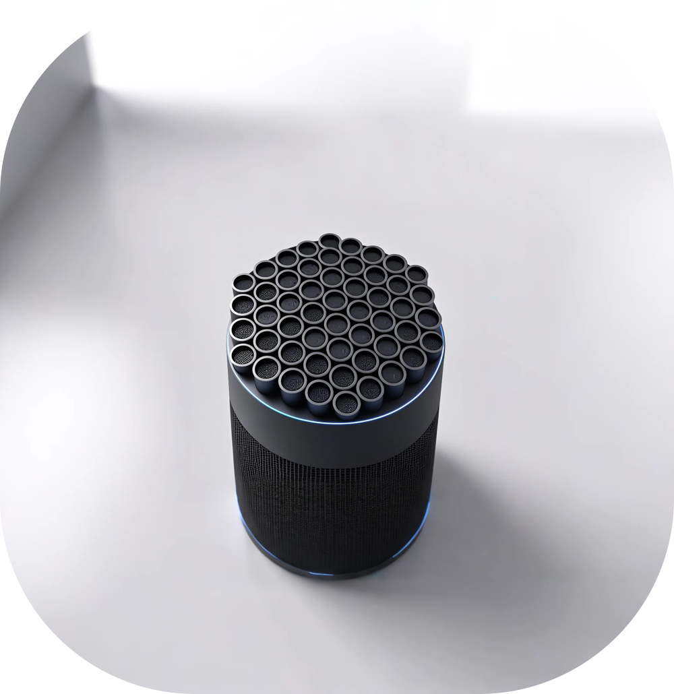

定向音频原型验证
通过超声波阵列与相关音频链路，探索“声音更有方向”的实现路径，面向公共展示与个人音频体验场景。
PROJECT 02
一个围绕定向音频传播展开的工程项目。我在项目中承担负责人角色，关注硬件系统搭建、ESP32 功能验证、样机调试与整体推进。

CONCEPT FORM · ENGINEERING PROJECT BELOWOVERVIEW
通过超声波阵列与相关音频链路，探索“声音更有方向”的实现路径，面向公共展示与个人音频体验场景。
负责整体推进、任务分工与展示沟通，并协同完成硬件系统搭建、蓝牙音频功能验证与样机调试。
已完成基础样机开发，实现蓝牙音频接收与基础定向发声，并完成展示与联调验证。
ENGINEERING
围绕 ESP32、蓝牙音频接收、功放与定向发声链路完成样机组装。
检查信号链与硬件连接，完成嵌入式功能验证、问题排查和系统联调。
面向真实展示场景完成功能测试、现场联调并交付第一代可运行 Demo。
声音与空间
我关注声音在空间中的分配：讲解应该在哪里被听见，邻近区域受到多少影响，人移动后体验怎样变化。第一代 Demo 让基础链路成立，下一步希望把问题放进明确的位置、内容与使用条件中。
墙面、背景声与空间条件
固定声源和内容，再比较站位、角度与移动过程，记录讲解在哪些条件下清楚可听。
观察邻近区域与背景声的影响，比较不同讲解内容，不用单个最佳位置代替完整使用过程。
继续研究阵列、功耗、结构与持续工作表现，并补充 DSP 与声场仿真的研究，让改进有可解释的依据。
GALLERY